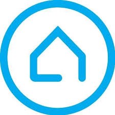
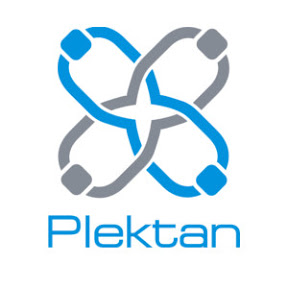

Mirtal |
Про компаніюСьогодні Mirtal-Нерухомість - це провідна ріелторська компанія країни і один з найбільших інвестиційно-девелоперських холдингів повного циклу, в роботі якого зайняті тисячі людей. Діяльність компанії зосереджена на наданні ріелторських послуг.Згідно з рейтингами журналів Forbes і «Фінанс», компанія Mirtal-Нерухомість є однією з найбільших приватних компаній України, представлених на ринку вітчизняної нерухомості. Діяльність компанії регулярно відзначається професійними і громадськими нагородами. Ріелторська діяльність компаніїЗгідно з експертними оцінками, частка компанії Mirtal-Нерухомість на організованому ринку ріелторських послуг перевищує 32%, на ринку операцій із заміською нерухомістю - 75%, на ринку оренди житла - 50%. |
Діяльність компанії в сфері заміського будівництваПерші інвестиційні проекти в області заміської нерухомості група компаній Mirtal почала реалізовувати в 2001 році. Для елітного напряму був створений окремий бренд - Villagio Estate. На сьогоднішній день в активі групи знаходиться понад 20 селищ. Половина проектів вже повністю реалізована і введена в експлуатацію. Робота над елітними комплексами «Міленіум Парк», «Монтевіль», «Медісон Парк» на Московському шосе практично завершена. В стадії активних продажів знаходяться селища «Маленька Шотландія» і «Novoріжскій» в Харкові і житлові комплекси «Вдалий» і «Сосни» під Харковом. Також ведеться реалізація нових елітних проектів під брендом Villagio Estate. Селище Park Avenue поєднує два сучасних формату нерухомості: таунхауси і апартаменти; розкішні резиденції «Ренесанс Парк» зводяться в оточенні вікового лісу; проект Futuro Park включає квартал таунхаусів з оригінальним архітектурним рішенням. |
Історія КомпаніїІсторія Mirtal-Нерухомість бере свій початок в 1991 році, коли були засновані агентства нерухомості ІНКОМ і Mirtal, швидко увійшли в число лідерів ріелторського ринку Харкова. У 2001 році паритетне об`єднання двох компаній призвело до створення найбільшого гравця вітчизняного ринку нерухомості - Mirtal-Нерухомість, яка надає сьогодні своїм клієнтам повний спектр ріелторських послуг найвищої якості. У перші ж роки своєї діяльності компанія досягла значних результатів в динаміці розвитку завдяки проведенню ефективної маркетингової політики. Вже до 2006 року Mirtal-Нерухомість домоглася значного відриву від конкурентів по такому ключовому показнику, як займана частка ринку. У 2007 році в самостійний бренд було виділено підрозділ елітної нерухомості - Villagio Estate. Кількість здійснених операцій з нерухомістю обчислюється сотнями тисяч. З кожним роком зростає і чисельність співробітників. Той факт, що Mirtal-Нерухомість продовжує динамічно розвиватися і успішно відповідає на виклики часу, свідчить про правильність вибору стратегічного курсу. Сьогодні Mirtal-Нерухомість є сучасною, високотехнологічною, відкритої до інновацій компанією, по праву займає позицію лідера галузі і впевнено дивиться в майбутнє. Mirtal-Нерухомість є постійним членом професійних об'єднань. Згідно з рейтингами журналів Forbes і «Фінанс», вона є однією з найбільших приватних компаній України, представлених на ринку вітчизняної нерухомості. Її діяльність регулярно відзначається професійними і громадськими нагородами. Так, Mirtal-Нерухомість стала першим представником ринку нерухомості, який отримав за результатами національного голосування почесний статус «Народна Марка / Марка № 1 в Україні». А в січні 2014 року в світовому звіті з проблем репутаційного менеджменту, який випустила авторитетна компанія Synovate Comcon, що входить до міжнародної дослідницької мережі Ipsos, Mirtal-Нерухомість була визнана однією з кращих українських компаній з найбільш надійною корпоративною репутацією. |
Агентство нерухомості "Country" |
ПАТ «УКРСИББАНК» |
Компанія "Plektan" |
"Харків-Риєлтор" |
Газета безкоштовних оголошень «Aviso» |
|---|
2020 © Нерухомість в Харкові "Mirtal | Агенство Нерухомості" |